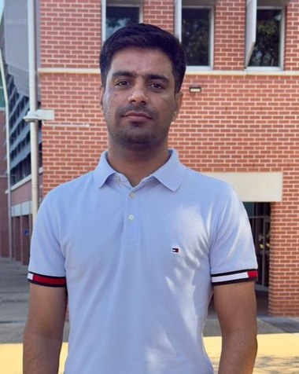

Real-time driver drowsiness detection
Transfer learning with DenseNet121 detects whether the driver's eyes are open or closed, and sounds a buzzer when they close.
DenseNet121OpenCVRaspberry Pi
PhD Researcher · Artificial Intelligence
I build machine learning that works on private, spread-out data: federated learning for detecting brain disorders from EEG, and lightweight models that detect attacks on IoT devices.

I am a PhD candidate in Artificial Intelligence at the University of Southern Queensland (UniSQ), on a UniSQ International Fees Research Scholarship. My thesis is on federated learning for detecting neurological disorders from EEG signals, so that hospitals can train shared models without sharing patient data.
Before this, I completed a Master of Engineering Science at Multimedia University, Malaysia, where I worked for two years as a Graduate Research Assistant on a government-funded (FRGS) project: federated learning of spiking neural networks for the Artificial Intelligence of Things. I also have industry experience as an ML/AI engineer, building and deploying models for real products.
I review for IEEE Access and Engineering Applications of Artificial Intelligence, and I serve as a student representative on a UniSQ research committee.
Federated and split learning, so models can learn from data held by many hospitals or devices without moving that data.
Detecting dementia and depression from EEG, retinal disease from eye scans, and COVID-19 from chest X-rays, with explainable outputs.
Small, fast intrusion and malware detectors for low-power devices, using 1D CNNs, knowledge distillation and spiking networks.
M. Umair, M. S. Khan, W. Al Malwi, F. Asiri, I. Nafea, F. Saeed, J. Ahmad
IEEE Transactions on Consumer Electronics, vol. 71, pp. 12157–12165 Journal
M. Umair, M. S. Khan, M. Hanif, W. Ghaban, I. Nafea, S. N. Qasem, F. Saeed
Frontiers in Computational Neuroscience, vol. 19 Journal
M. Umair, J. Ahmad, O. Saidani, M. S. Alshehri, A. Al Mazroa, M. Hanif, R. Ullah, M. S. Khan
Frontiers in Medicine, vol. 12 Journal
M. Umair, J. Ahmad, N. Alasbali, O. Saidani, M. Hanif, A. A. Khattak, M. S. Khan
Frontiers in Computational Neuroscience, vol. 19 Journal
Lithium-ion battery state of health degradation prediction using deep learning approaches
T. Alharbi, M. Umair, A. Alharbi
IEEE Access, vol. 13, pp. 13464–13481 Journal
W. I. A. E. Altabaji, M. Umair, W.-H. Tan, Y.-L. Foo, C.-P. Ooi
IEEE Access, vol. 12, pp. 36622–36635 Journal
M. Umair, M. S. Khan, F. Ahmed, F. Baothman, F. Alqahtani, M. Alian, J. Ahmad
Sensors, vol. 21 Journal
Optimized 1D convolutional neural network for efficient intrusion detection in IoT networks
M. Umair, W.-H. Tan, Y.-L. Foo
IEEE 8th Int. Conf. on Signal and Image Processing Applications (ICSIPA), pp. 1–6 Conference
Dynamic federated learning aggregation for enhanced intrusion detection in IoT attacks
M. Umair, W.-H. Tan, Y.-L. Foo
Int. Conf. on Artificial Intelligence in Information and Communication (ICAIIC), pp. 524–529 Conference
Network intrusion detection using dynamic weighted aggregation federated learning
M. Umair, W.-H. Tan, Y.-L. Foo
IEEE 8th Int. Conf. on Recent Advances and Innovations in Engineering (ICRAIE), pp. 1–6 Conference
Full and up-to-date list on Google Scholar.
University of Southern Queensland · Toowoomba, Australia
Federated learning for EEG-based detection of neurological disorders.
Techelix · Karachi, Pakistan
Built, deployed and monitored machine learning models for products, working with cross-functional teams on data preparation, training and scaling.
ComeBy Sdn Bhd · Kuala Lumpur, Malaysia
Built generative AI and forecasting models for client insights, and turned complex data into clear visual reports.
Multimedia University · Cyberjaya, Malaysia
Federated learning of spiking neural networks for the Artificial Intelligence of Things (FRGS and TM funded). Multi-modal deep models to predict cyber attacks on IoT devices. Advisor: Dr. Foo Yee Loo.
Smart City Lab, NCAI, NED UET · Karachi, Pakistan
Real-time driver drowsiness detection with face detection models, optimised and deployed on a Raspberry Pi.
HITEC University · Pakistan
Transfer learning on chest X-rays for early COVID-19 detection, published in Sensors. Advisor: Dr. Muhammad Shahbaz Khan.
Transfer learning with DenseNet121 detects whether the driver's eyes are open or closed, and sounds a buzzer when they close.
A live dashboard for battery health, with a Gemini-based chatbot that answers questions about the readings.
Running the DeepSeek-R1 language model on a local machine with Ollama, with a Streamlit chat interface.
Generates short stories and reads them aloud, using GPT-2 and Llama for text and gTTS for speech.
Analysis of a Kaggle crop dataset to find which soil and weather features matter most, then recommend suitable crops.
Transfer learning with Grad-CAM heatmaps that show which part of the X-ray led to the result. Basis of the 2021 Sensors paper.
More code on GitHub, including quantum computing notebooks and object detection work.
Open to research collaboration, reviewing, and AI roles. Email is the fastest way to reach me.
Muhammad.Umair@unisq.edu.auSend emailumairrafiq800@gmail.comSend email